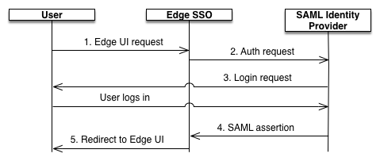

Using SAML with the Edge UI
Edge for Private Cloud v. 4.18.01
The SAML specification defines three entities:
- Principal (Edge UI user)
- Service provider (Edge SSO)
- Identity provider (returns SAML assertion)
When SAML is enabled, the principal (an Edge UI user) requests access to the service provider (Edge SSO). Edge SSO (in it's role as a SAML service provider) then requests and obtains an identity assertion from the SAML identity provider and uses that assertion to create the OAuth2 token required to access the Edge UI. The user is then redirected to the Edge UI.
This process is shown below:

In this diagram:
- User attempts to access the Edge UI by making a request to the login URL for the Edge UI:
For example: https://edge_ui_IP_DNS:9000
- Unauthenticated requests to are redirected to the SAML identity provider. For example, https://idp.customer.com.
- If customer is not logged in to the identity provider, the customer is prompted to log in.
- The user is authenticated by the SAML identity provider. The SAML identity provider generates and returns a SAML 2.0 assertion to the Edge SSO.
- Edge SSO validates the assertion, extracts the user identity from the assertion, generates the OAuth 2 authentication token for the Edge UI, and redirects the user to the main Edge UI page at:
https://edge_ui_IP_DNS:9000/platform/orgName
where orgName is the name of an Edge organization.